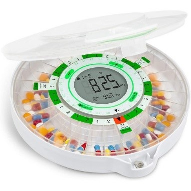

<br>
#### Class 2 - 2D Design and Cutting
During my labs on June 22, I designed and constructed a press-fit hexagonal pencil holder. My first few designs were extremely complicated. So, after much consideration, I decided to use something I had previously designed to compensate for my lack of knowledge on a laser cutter. I first drew my design on paper to make sure I had the correct plans. Then, I reconstructed the pencil holder on a website named Shapr3D. From there, I took the plans to the laser cutter. After cutting out my design, the pieces fit together perfectly. However, my height dimensions were slightly off. My pencil holder was shorter than I imagined it would be. While I am still getting used to using the metric system, my ability in understanding it is improving every day. Here are the plans and final outcome of my press-fit pencil holder.
<!--<p>The first project I thought of was a walking stabilizer. Walking is the one thing my mom refuses to give up on, so I want to give her the chance to walk for as long as possible. In this project, I would be creating a sort of exoskeleton that straps around the waist and hinges at the hip and knee. The device would be programed so that when an individual leans forward (or maybe presses a button) the exoskeleton will move the legs to make that person walk forward. The femur and calf sections will both hopefully be adjustable in length so they could be adjusted to any person. Below are a few similar images that I want my project to look and function like.</p>
<img src="../pictures/Legs2.jpg">
<p>The other project that I am considering is an automated pill box. Since it is not uncommon for my mom to accidently take her morning meds at night, or even forgot if she took them at all, I want to built a pill box that will release the right number of meds at the right time of day. I would build a box with compartments for each medicine. Then, I would create a mechanism to dispense the correct number of pills. I would also need to put a timer on it to dispense in the mornings and evenings. </p>
 -->
<!--write documention on how I set website up here.-->